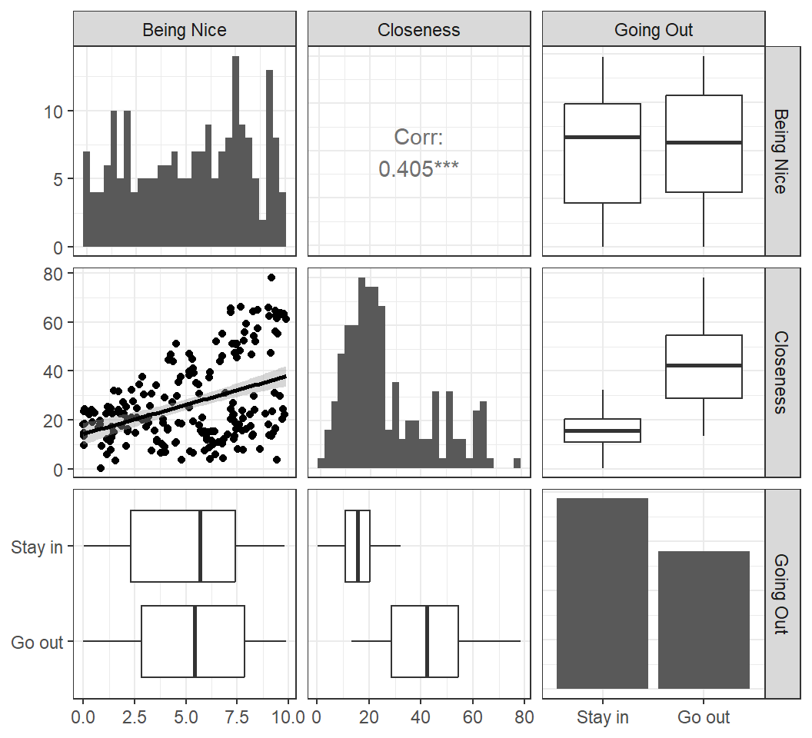
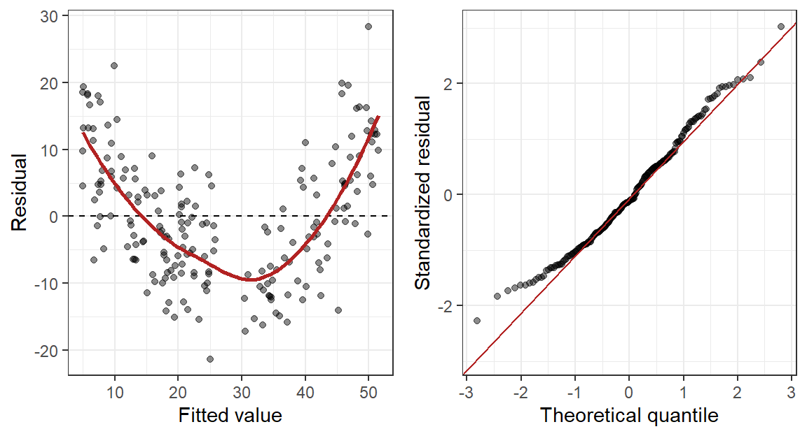
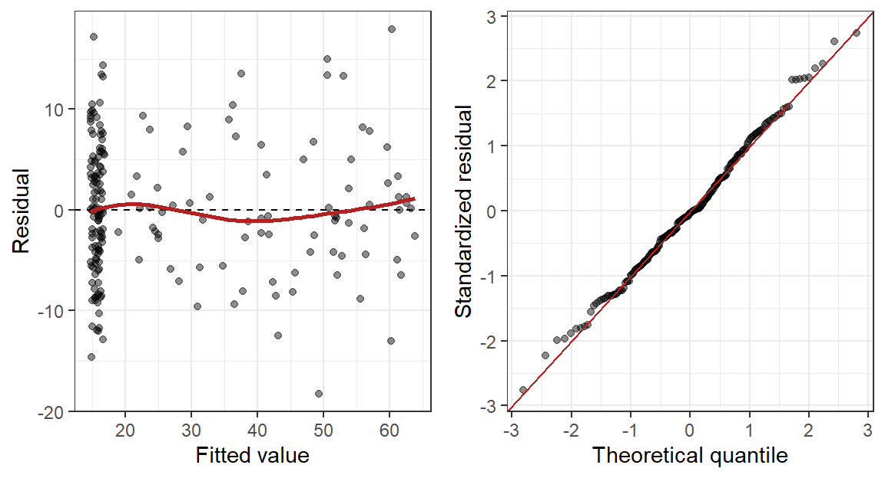
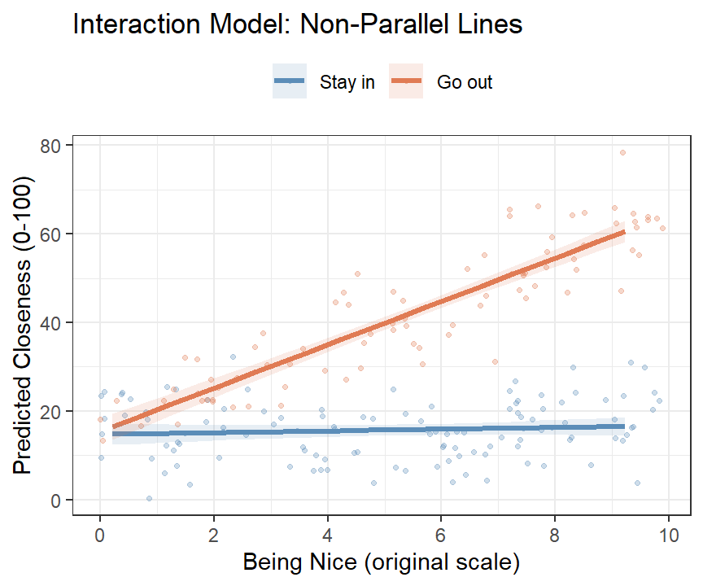
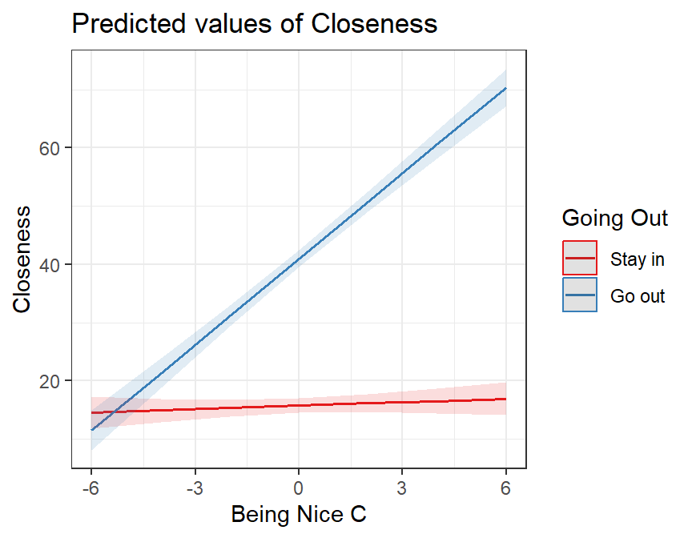

set.seed(42)
n <- 200
X <- runif(n, 0, 10)
Z <- rbinom(n, 1, 0.5)
Y <- 0.05 * X + 0 * Z + 5 * X * Z + 15 + rnorm(n, sd = 7)
Friend.Data <- data.frame(BeingNice = X, GoingOut = Z, Closeness = Y)
Friend.Data$GoingOut_ <- factor(Friend.Data$GoingOut,
levels = c(0, 1),
labels = c("Stay in", "Go out"))16 Continuous-by-Categorical Interactions: When the Effect of One Variable Depends on Another
16.1 Two Slopes, and Nothing That Compares Them
Here is a study you could run tomorrow. Closely follow 200 first-semester students wherever they go and video record all their social interactions for an entire semester, while you yell “IGNORE ME” every 30 seconds to ensure they know not to have their behaviors affected by you observing them 24/7 with a camera. Next, have a trained panel of clinical psychologists review all their interactions and rate how warm and agreeable each one is on a 0 to 10 scale. Since we know what they are doing at all times, we would also note whether they actually went out to parties and social events, or stayed home all semester. At the end of the semester we ask each victim, I mean each student who agreed to participate and signed all the IRB forms and waived all rights to their videos, how close a friendship they formed with one particular person they met in week one of the study, on a 0 to 100 “feelings” thermometer.
Below is the simulation of that study.
Next, you then split the students into the ones who went out and the ones who stayed in, and run an ordinary regression in each half predicting closeness from niceness. Two groups, two regressions, nothing you have not already done a dozen times.
Stay in People:
Stay.In <- subset(Friend.Data, GoingOut_ == "Stay in")
coef(summary(lm(Closeness ~ BeingNice, data = Stay.In))) Estimate Std. Error t value Pr(>|t|)
(Intercept) 14.6930979 1.2346357 11.9007558 1.017885e-21
BeingNice 0.1997669 0.2107005 0.9481084 3.450798e-01Go out People:
Go.Out <- subset(Friend.Data, GoingOut_ == "Go out")
coef(summary(lm(Closeness ~ BeingNice, data = Go.Out))) Estimate Std. Error t value Pr(>|t|)
(Intercept) 15.354310 1.550136 9.905138 1.149587e-15
BeingNice 4.904171 0.252405 19.429767 1.983002e-32Read the two slopes. Among students who stayed in, each point of niceness buys 0.2 points of closeness, which is nothing, and the p-value of 0.35 agrees that it is nothing. Among students who went out, each point of niceness buys 4.9 points, and its p-value has run off the bottom of the printout. Same trait, same outcome, same semester, same campus. Being nice appears to be worth something to one group and nothing at all to the other.
Great. Being nice only pays off if you leave the house. Write it up, submit it, wait.
Now defend it. A reviewer asks the one question anybody would ask: are those two slopes actually different, or did two numbers just bounce apart the way numbers sometimes do by chance? Now, go find that test in the output above. I will wait…
What, it is not there? Weird. You have two intercepts, two slopes, four standard errors and four p-values, and every single one of them is a statement about one group considered entirely on its own. You drew an inference based on two separate tables that have nothing to do with each other. You inferred, because the stay-in slope was smaller than the go-out slope, that being nice clearly does more for the people who go out. The comparison the whole study was built to make was never performed, and no amount of staring at p = .35 and p < .001 will conjure it, because a small p-value next to a large one is not a test of the difference between them. You cannot test a difference with two analyses that have never met.
That missing test is what this chapter is for. The tool is called an interaction, and by the end of it you will have these exact two slopes back, 0.2 and 4.9, living inside one model that also hands you a significance test for the gap between them.
16.2 Where We Are and Where We Are Going
So far in this book, you have learned to build regression models where each predictor has its own independent, additive effect on the outcome. Study hours helps exam scores. Test anxiety hurts them. Each predictor does its job, and we can interpret the effects one at a time.
But human behavior is rarely that tidy. In the real world, the effect of one variable often changes depending on the value of another variable. A new medication might be effective for women but not men. Praise for effort might motivate some students while leaving others cold. Practice might matter enormously for novices but very little for experts.
These situations, where the effect of one predictor depends on another predictor, are called interactions, or equivalently, moderation effects. In this chapter, you will learn to detect, estimate, visualize, and interpret an interaction between a continuous variable and a categorical one.
Before we touch any data, we need to build the concept carefully. That is where we will start.
16.3 The Friendship Study
You have probably heard the expression “right place, right time.” It turns out that this is not just a saying; it is backed by social psychological research. A classic study by Back, Schmukle, and Egloff (2008) found that the friendships people form in university are driven, in large part, by seating proximity. Literally, the people you end up sitting next to on the first day of class are the people most likely to become your close friends by the end of the semester. Chance determines who you sit near. Geography becomes destiny.
You decide to replicate and extend this work. You follow 200 first-semester students throughout their first semester, recording how close of a friendship they formed with one particular person (measured on a 0–100 feelings thermometer, where 0 = complete strangers and 100 = best friends). You also measure two things that might predict the quality of that friendship:
- Being Nice: each person is rated on their general agreeableness and warmth by a trained panel, on a scale from 0 to 10. This is a continuous variable.
- Going Out: whether the student regularly attended social events and parties throughout the semester. This is a binary variable: Stay in (0) vs. Go out (1).
The intuition behind your study is this: being a warm, friendly person should help you make a close friend. But being nice in your apartment, alone, does not do much for your social life. To turn niceness into friendship, you have to actually be around people. The effect of being nice might depend on whether you go out.
That is your hypothesis. And testing it is the focus of this chapter.
NoteTwo IVs, One DV, and Nobody Measured Twice
Worth naming the parts before we model them, because from here on there is more than one of some of them.
The DV (dependent variable, the outcome) is friendship closeness, 0 to 100. There is exactly one.
The IVs (independent variables, the predictors) are Being Nice and Going Out. Two of them. That is what makes an interaction possible in the first place: you need two IVs before you can ask whether the effect of one depends on the other.
Both IVs are between subjects. Each student contributes one row, sits in one Going Out group, and is measured once. Nobody appears twice. That is worth saying out loud because it is not always true, and when the same person is measured repeatedly the model has to change to account for it. That is a later chapter.
One more thing, and it matters more than it looks. Regression does not care whether an IV was randomly assigned or merely observed. The arithmetic is identical either way. We did not assign anybody to be nice, and we certainly did not assign anybody to go to parties; we watched and wrote it down. So this is a quasi-experiment, the math will run exactly as if it were not, and every causal word you are tempted to write in the discussion section is on you, not on the model.
Back, M. D., Schmukle, S. C., & Egloff, B. (2008). Becoming friends by chance. Psychological Science, 19(5), 439–440.
16.4 What Is an Interaction? The Concept Before the Math
16.4.1 “It Depends” as a Scientific Statement
In everyday conversation, “it depends” can sound like an evasion, a way of refusing to commit to an answer. In statistics, it is a precise and testable claim. When we say “the effect of X on Y depends on Z,” we mean something specific: the slope of X on Y is not the same across different values of Z. That is an interaction.
Let’s make this concrete. There are two fundamentally different ways the world could work in our friendship study.
Possibility 1: Being nice always helps (no interaction). Whether you stay in or go out, being a nicer person leads to a closer friendship. The social opportunities provided by going out matter too: going out raises closeness overall, but the benefit of being nice is the same either way.
Possibility 2: Being nice only pays off if you go out (interaction). For students who stay in all semester, niceness makes little difference; they simply do not have enough social contact for their personality to matter. For students who go out, however, being nice is powerful: it turns those social opportunities into genuine close friendships.
These two possibilities predict completely different patterns in the data. Before we analyze a single number, we can sketch out what each would look like.
16.4.2 Visual Hypotheses: Sketching What We Expect to See
One of the most useful habits in data analysis is to draw a picture of what you expect your results to look like before you run a single model. This keeps your hypotheses honest: you cannot accidentally convince yourself you predicted something after the fact. It also gives you an intuition for what you are looking for.
In our study, we want to predict Friendship Closeness (Y) from Being Nice (X) separately for people who Stay in and Go out (Z). This naturally produces two lines on a plot: one for each group. The question is what those two lines look like relative to each other.
Here are our two competing hypotheses, visualized:

Look at the difference between these two pictures:
In Hypothesis A, the two lines are parallel. The “Go out” line is higher than the “Stay in” line (going out raises closeness overall), but the slope of both lines is the same. Being nice helps by about the same amount whether you go out or not. This is what a main effects only world looks like: each variable has an independent, additive effect.
In Hypothesis B, the two lines are not parallel. For people who stay in, the line is almost flat: being nice barely moves the needle. For people who go out, the line is steep: being nice strongly predicts closeness. The slope for “Go out” is much steeper than the slope for “Stay in.” This is an interaction: the slope of Being Nice depends on whether you go out.
The key visual signature of an interaction is non-parallel lines. If you run an interaction model and your lines look parallel, the interaction is not doing anything. If the lines fan out, cross, or differ in steepness, you have an interaction.
We will use this visual intuition throughout this chapter to interpret the output.
16.4.3 The Two-Regressions Intuition
You have already met this idea, in the first thing we did in this chapter. Splitting the data by group and running a separate regression in each half gives you a slope per group:
- Regression for Stay-in students: a slope for Being Nice. Call it \(b_{stay}\).
- Regression for Go-out students: a slope for Being Nice. Call it \(b_{go}\).
If there is no interaction, \(b_{stay} \approx b_{go}\): the two slopes are about the same. If there is an interaction, \(b_{stay} \neq b_{go}\): the slopes differ.
That approach shows you an interaction and cannot test one, for the reason the cold open ran into: two estimates from two disconnected analyses, and no standard error anywhere for the quantity you care about, which is the gap.
An interaction model fits both slopes simultaneously in a single model and attaches a significance test to the difference between them. That test is the interaction term. When it is significant, the slopes differ by more than sampling variability would predict. When it is not, the data do not support the claim that the slopes differ at all.
So an interaction model is a formalized, simultaneous, significance-tested version of the two regressions you already ran. Hold onto that image; when we get to \(B_3\) it stops being an analogy and starts being literally the same numbers.
16.5 Before We Run the Models: Two Concepts You Need First
16.5.1 Centering: Making Zero Meaningful
You have seen the intercept in every regression model we have run in this book, and you know it means “the predicted value of Y when X = 0.” That definition is simple enough. The problem is that zero is not always a meaningful value.
In our friendship study, Being Nice is measured on a 0–10 scale. Zero means “not nice at all,” a real value technically, but one that describes an essentially sociopathic person who presumably does not exist in our sample. When our regression model reports an intercept, it is making a prediction for a hypothetical person with zero niceness. That is not a very useful prediction.
Now consider what happens when we build an interaction model. The intercept will be the predicted closeness score for a person with zero niceness who also stays in. The coefficient for Going Out will be the gap between the two groups at zero niceness. These values are anchored to a strange and artificial point that nobody in our data actually occupies.
Centering solves this by shifting the scale of a continuous variable so that zero has a meaningful interpretation: the average person in the sample.
The process is simple: subtract the mean.
\[X_c = X - M\]
After centering:
- A score of \(X_c = 0\) means this person is exactly average on Being Nice (relative to this sample).
- A score of \(X_c = 2\) means this person is 2 points above the average.
- A score of \(X_c = -3\) means this person is 3 points below the average.
The scale is shifted, but nothing else changes. The distances between people are identical. The slope of the regression line is identical. The \(R^2\) is identical. The only thing that changes is the meaning of the intercept (and the meaning of some of the other coefficients in the interaction model, as we will see).
Important distinction: centering is not the same as standardizing.
You may recall from earlier in the book that we can also standardize (or z-score) a variable by subtracting the mean and dividing by the standard deviation:
\[Z = \frac{X - M}{S}\]
Standardizing changes the units of the variable: a standardized coefficient represents the change in Y for a one-standard-deviation increase in X. Centering does not change the units: a centered coefficient still represents the change in Y for a one-unit increase in X. In this chapter, we will only center, not standardize. We want to preserve the original units of our scale (a one-point increase in niceness = one point) while simply making zero mean “the average person.”
When we center Being Nice, the intercept in our interaction model will represent the predicted closeness score for a person of average niceness who stays in. That is a real, interpretable, meaningful prediction; a much better anchor than “a person with zero niceness.” We will do it to our data in a moment, as soon as the data exist.
16.5.2 Dummy Coding: A Quick Review
You already know how to dummy code a categorical variable for regression. When we use a binary categorical predictor like Going Out (Stay in vs. Go out), R automatically converts it into a dummy variable: one group is coded as 0 (the reference group) and the other as 1 (the comparison group). In our study, Stay in will be the reference group (coded 0), and Go out will be the comparison group (coded 1). We tell R which group comes first by setting the factor levels in the desired order.
With dummy coding in place:
- The intercept represents the predicted outcome for the reference group (Stay in) at whatever value the continuous predictor takes.
- The coefficient for GoingOut represents the gap between the two groups, holding the continuous predictor constant.
We will see exactly how this plays out, and how centering changes the interpretation, as we work through the models.
16.6 The Data
We collected data from 200 first-semester university students. Each student’s friendship closeness with one person they met at the start of the semester was recorded at the end of the semester using a 0–100 feelings thermometer. Their agreeableness and warmth was rated by a trained panel on a 0–10 scale, and we noted whether they regularly attended social events and parties throughout the semester.
Here is a summary of the sample broken down by social engagement:
library(tidyverse)
Friend.Data |>
group_by(GoingOut_) |>
summarise(
n = n(),
M_Nice = round(mean(BeingNice), 2),
M_Close = round(mean(Closeness), 2),
SD_Close = round(sd(Closeness), 2)
)# A tibble: 2 x 5
GoingOut_ n M_Nice M_Close SD_Close
<fct> <int> <dbl> <dbl> <dbl>
1 Stay in 116 5.07 15.7 6.65
2 Go out 84 5.43 42.0 15.6 The “Go out” group sits far higher on the closeness thermometer on average. This makes sense: going out creates more social contact. But the standard deviations are large and similar across groups, meaning there is substantial individual variability within each group. Something beyond just whether you go out is driving that spread. That is what we will investigate.
The mean of Being Nice in our sample is:
round(mean(Friend.Data$BeingNice), 2)[1] 5.2216.6.1 How to Center in R
Now that the data exist, we can center. We use the scale() function with center = TRUE and scale = FALSE. Setting scale = FALSE tells R to subtract the mean without dividing by the standard deviation, so we get the shift without the rescaling.
# as.numeric() matters here; see the warning below
Friend.Data$BeingNice.C <- as.numeric(scale(Friend.Data$BeingNice,
center = TRUE, scale = FALSE))
# Always check it worked: a centered variable has a mean of (essentially) zero
mean(Friend.Data$BeingNice.C)[1] 1.779328e-16That is zero with a rounding error’s worth of dust on it, which is exactly what centering is supposed to produce. R prints it in scientific notation to be annoying; 1.78e-16 is a decimal point followed by fifteen zeros and then a rounding error. A centered value of 0 now corresponds to a person who scored approximately 5.22 on the original 0–10 scale.
Two things in that one line are waiting to bite you.
Watch the scale = FALSE. Leave it out and scale() helpfully divides by the standard deviation as well, so you have silently z-scored instead of centered. Nothing errors. Your model runs, your plot draws, and every slope you report afterwards is in units nobody asked for.
Watch the as.numeric(). scale() does not return a vector; it returns a one-column matrix with the mean bolted on as an attribute. lm() does not care, which is the problem, because it means you will not find out until three sections from now when some plotting package refuses to draw your model and says something incomprehensible about nmatrix.1. Wrap it in as.numeric() and the column is an ordinary number like everything else in your data frame.
16.7 A First Look at the Data
Before running any models, let’s visualize the relationships in the data. This is always step one.

A few things stand out immediately:
- Being Nice and Closeness have a moderate positive correlation overall. More agreeable people tend to form closer friendships.
- Going Out and Closeness show a clear difference: students who go out score much higher on the thermometer on average.
- The overall correlation between Being Nice and Closeness is moderate, but look at the scatterplot: there is a lot of spread around the trend line. Something else might be going on.
The key question is whether the relationship between Being Nice and Closeness looks the same for both groups. The pairs plot makes this hard to see directly. That is what the interaction model is for.
16.8 Building the Models
16.8.1 Model 1: The Additive Model
We start with the simpler model: the one that says each variable has its own independent effect, with no interaction. This is our main effects model or additive model.
\[\widehat{Closeness} = B_0 + B_1 \cdot BeingNice_C + B_2 \cdot GoingOut + \varepsilon\]
Note two things about how we set this up:
- We use the centered version of Being Nice (
BeingNice.C), so the intercept will be the predicted closeness score for an average-niceness person. - We use the factored GoingOut variable (
GoingOut_), with Stay in as the reference group, so R handles the dummy coding automatically.
Model.1 <- lm(Closeness ~ BeingNice.C + GoingOut_, data = Friend.Data)
summary(Model.1)
Call:
lm(formula = Closeness ~ BeingNice.C + GoingOut_, data = Friend.Data)
Residuals:
Min 1Q Median 3Q Max
-21.320 -7.209 -1.063 5.883 28.356
Coefficients:
Estimate Std. Error t value Pr(>|t|)
(Intercept) 16.0242 0.8813 18.182 <2e-16 ***
BeingNice.C 2.1281 0.2307 9.226 <2e-16 ***
GoingOut_Go out 25.5128 1.3613 18.741 <2e-16 ***
---
Signif. codes: 0 '***' 0.001 '**' 0.01 '*' 0.05 '.' 0.1 ' ' 1
Residual standard error: 9.485 on 197 degrees of freedom
Multiple R-squared: 0.6996, Adjusted R-squared: 0.6966
F-statistic: 229.4 on 2 and 197 DF, p-value: < 2.2e-1616.8.2 What do the coefficients mean?
Intercept: The predicted closeness score for a person of average niceness (BeingNice.C = 0, i.e., roughly a 5.2 on the original scale) who stays in (GoingOut = reference group). This is a real, interpretable prediction: someone who is neither particularly nice nor antisocial, and who mostly stays home.
BeingNice.C: Controlling for whether the student goes out or not, each additional point of niceness (above the average) is associated with about 2.13 more points of closeness. This is averaged across both groups.
GoingOut_Go out: Controlling for how nice the student is, going out is associated with about 25.5 more points of closeness than staying in. This is the overall main effect of social engagement.
16.8.3 Visualizing the additive model
The critical test of the additive model is whether it produces parallel lines when we plot the predicted values.

The additive model forces the two lines to be parallel: that is built into the model’s assumptions when there is no interaction term. Notice how the lines run at the same angle, just shifted up for the “Go out” group. This model says: being nice helps equally, no matter what.
But does this model actually fit the data? Look at the raw data points (the faint dots). The “Go out” points (orange) seem to fan upward much more steeply as niceness increases, while the “Stay in” points (blue) look relatively flat. The parallel lines do not seem to capture that pattern. We need a model that lets the slopes differ.
And there is one more diagnostic concern with the additive model. Let’s look at the residuals:

The residual plot on the left shows a clear curved pattern, a classic sign that the model is missing something systematic. The data have a structure that a straight-line additive model cannot capture. This is exactly what you would expect when a real interaction exists and you have not modeled it. Time to add the interaction term.
16.8.4 Model 2: The Interaction Model
Now we add the interaction term. The equation becomes:
\[\widehat{Closeness} = B_0 + B_1 \cdot BeingNice_C + B_2 \cdot GoingOut + B_3 \cdot BeingNice_C \times GoingOut + \varepsilon\]
The new term, \(B_3 \cdot BeingNice_C \times GoingOut\), is the product of our two predictors. This is what allows the slope of Being Nice to be different for each group. In R, we use the * operator, which automatically includes both main effects and the interaction:
Model.2 <- lm(Closeness ~ BeingNice.C * GoingOut_, data = Friend.Data)
summary(Model.2)
Call:
lm(formula = Closeness ~ BeingNice.C * GoingOut_, data = Friend.Data)
Residuals:
Min 1Q Median 3Q Max
-18.2429 -4.4894 -0.2029 4.3964 17.9396
Coefficients:
Estimate Std. Error t value Pr(>|t|)
(Intercept) 15.7363 0.6183 25.449 <2e-16 ***
BeingNice.C 0.1998 0.2106 0.949 0.344
GoingOut_Go out 25.2284 0.9548 26.422 <2e-16 ***
BeingNice.C:GoingOut_Go out 4.7044 0.3289 14.304 <2e-16 ***
---
Signif. codes: 0 '***' 0.001 '**' 0.01 '*' 0.05 '.' 0.1 ' ' 1
Residual standard error: 6.651 on 196 degrees of freedom
Multiple R-squared: 0.853, Adjusted R-squared: 0.8508
F-statistic: 379.2 on 3 and 196 DF, p-value: < 2.2e-16Before we interpret these coefficients in detail, let’s ask the most important question first: does this more complex model actually fit the data better?
16.8.5 Does the Interaction Model Explain More Variance?
Adding the interaction term uses up one additional degree of freedom. We need to check whether the improvement in model fit justifies this cost. We do this with an F-test for model comparison, the same logic as hierarchical regression. The null hypothesis is that the interaction explains zero additional variance:
\[H_0: \Delta R^2 = 0 \quad \text{(the interaction adds nothing)}\]
Additive model R-squared: 0.7 Interaction model R-squared: 0.853 Change in R-squared: 0.153 knitr::kable(anova(Model.1, Model.2), digits = 3,
caption = "Model Comparison: Additive vs. Interaction")| Res.Df | RSS | Df | Sum of Sq | F | Pr(>F) |
|---|---|---|---|---|---|
| 197 | 17722.135 | NA | NA | NA | NA |
| 196 | 8670.551 | 1 | 9051.584 | 204.613 | 0 |
The interaction model explains substantially more variance than the additive model. The F-test is significant, meaning that the improvement in \(R^2\) (\(\Delta R^2 =\) 0.153) is far larger than we would expect by chance. Adding the interaction term was worth it. The two lines are not parallel in the population.
Let’s also check the residuals from the interaction model:

The residual pattern is now much healthier: the curved structure is gone, and the points are scattered more evenly around zero. This confirms that the interaction model is capturing what was actually going on in the data.
16.9 Interpreting the Interaction Model
16.9.1 The Plot First
Before reading the numbers, look at the picture. The plot below shows the predicted values from the interaction model:

This is Hypothesis B from our earlier sketch come to life in real data. The “Stay in” line (blue) is essentially flat: being nice does not seem to predict friendship closeness for students who spend the semester at home. The “Go out” line (orange) has a strong positive slope: among students who regularly attend social events, being a warmer and more agreeable person leads to substantially closer friendships. The two lines start at roughly the same point on the left and diverge dramatically as niceness increases.
Compare this to the parallel-lines plot from the additive model. The two models tell completely different stories. The additive model said: being nice helps equally for everyone. The interaction model says: being nice only really pays off if you are actually around people to be nice to.
Now let’s connect this picture to the numbers.
16.9.2 Walking Through Each Coefficient
Let’s go back to the model output and interpret each term carefully, using the plot as our guide.
Call:
lm(formula = Closeness ~ BeingNice.C * GoingOut_, data = Friend.Data)
Residuals:
Min 1Q Median 3Q Max
-18.2429 -4.4894 -0.2029 4.3964 17.9396
Coefficients:
Estimate Std. Error t value Pr(>|t|)
(Intercept) 15.7363 0.6183 25.449 <2e-16 ***
BeingNice.C 0.1998 0.2106 0.949 0.344
GoingOut_Go out 25.2284 0.9548 26.422 <2e-16 ***
BeingNice.C:GoingOut_Go out 4.7044 0.3289 14.304 <2e-16 ***
---
Signif. codes: 0 '***' 0.001 '**' 0.01 '*' 0.05 '.' 0.1 ' ' 1
Residual standard error: 6.651 on 196 degrees of freedom
Multiple R-squared: 0.853, Adjusted R-squared: 0.8508
F-statistic: 379.2 on 3 and 196 DF, p-value: < 2.2e-1616.9.3 The Intercept
The intercept (\(B_0\)) is the predicted closeness score when both predictors equal zero.
With our setup:
BeingNice.C = 0means a person of average niceness (the mean of 5.22 on the original scale)GoingOut = "Stay in"is the reference group (value = 0)
So the intercept is the predicted closeness score for an average-niceness person who stays in. Looking at our model output, the intercept is approximately 15.7.
On the plot, this is the point on the blue “Stay in” line directly above the center of the x-axis (average niceness). It sits around 16 on the 0–100 thermometer: not strangers exactly, but nowhere near best friends. About what proximity alone buys you when you never leave the building.
The intercept also comes with a p-value, testing whether that predicted value differs from zero. It does. But “average students have a nonzero opinion of the person they sat next to” is not a finding anybody will publish. Intercept p-values are usually ignorable; the slope tests are where the questions live.
16.9.4 \(B_1\): The Slope of Being Nice for the Stay-In Group
BeingNice.C (\(B_1 =\) 0.2) tells you the slope of Being Nice for the reference group, that is, the slope of the blue line for students who stay in.
This is called a simple effect rather than a main effect, because it is not the effect of Being Nice on average across groups: it is the effect of Being Nice within one specific group. Specifically, it is the rate of change along the blue line.
The p-value for BeingNice.C tests: is the slope of the “Stay in” line significantly different from zero?
Looking at the output, this slope is small and non-significant (\(p \approx\) 0.344). This is exactly what the flat blue line in our plot tells you: for students who stay in, being nicer is not significantly predictive of closer friendships. There is essentially no relationship there.
16.9.5 \(B_2\): The Group Difference at Average Niceness
GoingOut_Go out (\(B_2 =\) 25.2) tells you the predicted difference between the “Go out” and “Stay in” groups at the centering point of Being Nice, that is, at average niceness (BeingNice.C = 0).
This is a main effect in the sense that it is evaluated at the mean of the continuous variable (thanks to centering). It tells you: for a person of average niceness, how much more closeness do they get by going out versus staying in?
On the plot, this is the vertical gap between the two lines at the center of the x-axis (average niceness). Students who go out score about 25 points higher on the thermometer than students who stay in, when both groups are at average niceness. This gap is highly significant.
16.9.6 \(B_3\): The Interaction Term
BeingNice.C:GoingOut_Go out (\(B_3 =\) 4.7) is the heart of the analysis. This coefficient represents how much steeper the “Go out” slope is compared to the “Stay in” slope.
Think of it as the answer to: by how many extra points of closeness, per niceness point, does the “Go out” group outpace the “Stay in” group?
- The slope for the “Stay in” group is \(B_1 =\) 0.2 (essentially flat)
- The slope for the “Go out” group is \(B_1 + B_3 =\) 0.2 \(+\) 4.7 \(=\) 4.9
Look at those two numbers, then scroll back to the two regressions we ran at the top of the chapter before we knew what an interaction was. They are the same numbers. 0.2 and 4.9, recovered to the last decimal place, because splitting the data by group and letting an interaction term do the splitting for you are the same arithmetic wearing different clothes.
What is new is \(B_3\) itself. Two separate regressions could hand you both slopes and then shrug. This model hands you the distance between them, 4.7 points of closeness per point of niceness, with a standard error attached and a p-value underneath. That is the test the reviewer asked for, and it is emphatically significant.
Here is a summary table to tie everything together:
| Coefficient | Value | What it represents | What it tests |
|---|---|---|---|
| Intercept | 15.74 | Predicted closeness for average-niceness, Stay-in student | Is this > 0? |
| BeingNice.C | 0.2 | Slope of Being Nice for Stay-in group (simple effect) | Is the Stay-in slope \(\neq\) 0? |
| GoingOut (Go out) | 25.23 | Group gap at average niceness (main effect) | Is there a group difference at the mean? |
| BeingNice.C × GoingOut | 4.7 | Difference in slopes between groups | Are the two slopes significantly different? |
16.9.7 The One-Line Version
The plot above was built by hand, and we will build a fully polished one at the end of the chapter. That is the right amount of effort when a figure is going into a manuscript. It is far too much effort when you are sitting in front of a model at 11pm wanting to know what shape it is.
For that, sjPlot does the whole thing in one line:
library(sjPlot)
plot_model(Model.2, type = "int")+theme_bw()
plot_model() with no formatting work at all. Non-parallel lines, same story, one line of code.This is the exploratory version, and exploratory code is allowed to be fast and slightly ugly. Notice what it gives you and what it does not. The x-axis is centered niceness, running from about \(-6.6\) to \(+6.6\) rather than the original 0 to 10, so the reader has to know what centering is before the axis means anything. It labels the variable “Being Nice C”, because it is reading your column name and has no idea what you meant.
The hand-built version buys back the original axis and control over everything a reviewer will complain about.
Learn both. Use the fast one until the figure actually matters.
16.10 Simple Slopes: Testing Each Group’s Slope Separately
The interaction term tells us that the two slopes differ significantly. But we also want to know, for each group separately: is the relationship between Being Nice and Closeness significantly different from zero?
We already have the answer for the “Stay in” group: the BeingNice.C coefficient is the “Stay in” slope, and it is non-significant. Being nice does not predict friendship closeness for students who stay in.
But what about the “Go out” group? We know the “Go out” slope (\(B_1 + B_3 \approx\) 4.9) is large and positive, but we need a formal significance test.
We use the emtrends() function from the emmeans package, which extracts and tests the slope of Being Nice separately within each level of Going Out:
library(emmeans)
simple.slopes <- emtrends(Model.2, "GoingOut_", var = "BeingNice.C")
# infer = TRUE shows both confidence intervals and significance tests in one table
summary(simple.slopes, infer = TRUE) GoingOut_ BeingNice.C.trend SE df lower.CL upper.CL t.ratio p.value
Stay in 0.2 0.211 196 -0.215 0.615 0.949 0.3439
Go out 4.9 0.253 196 4.406 5.402 19.412 <0.0001
Confidence level used: 0.95 This output gives us what we need:
Stay in group: The slope of Being Nice is approximately 0.2, which is not significantly different from zero (\(p =\) 0.344). For students who stay in, being nicer does not predict how close a friendship they form.
Go out group: The slope of Being Nice is approximately 4.9, which is significantly positive (\(p <\) .001). For students who go out, every additional point of niceness is associated with about 5 more points of closeness.
Notice that emtrends() has handed back the same two slopes for the third time: once from the separate regressions at the top of the chapter, once as \(B_1\) and \(B_1 + B_3\), and now here. The estimates never move. What the interaction model buys you is not a better slope, it is one pooled error term across all 200 students instead of two error terms estimated from 116 and 84, and the ability to put a standard error on the gap. That gap is the only quantity in this chapter that the separate regressions could not produce at all.
This completes the picture. The effect of Being Nice on friendship closeness is conditional: it only emerges among students who are out there meeting people. For students who stay home, personality differences do not seem to matter much for friendship formation. Going out is what activates the effect of being a warm and agreeable person.
16.11 APA Write-Up
Here is how you would write up these results following APA style. Notice the structure: descriptive statistics first, overall model fit, the interaction test, then the simple slopes to unpack what the interaction means.
Prior to the main analysis, descriptive statistics were examined by group. Students who stayed in reported lower friendship closeness on average (M = 15.7, SD = 6.7) than students who went out regularly (M = 42, SD = 15.6).
A hierarchical multiple regression was conducted to examine whether going out moderated the relationship between agreeableness and friendship closeness. Being Nice (centered at the sample mean) and Going Out (dummy coded, Stay in as reference group) were entered in Step 1 as main effects; their product (the interaction term) was entered in Step 2. The additive model (Step 1) was statistically significant, \(F(2, 197) =\) 229.42, \(p < .001\), \(R^2 =\) 0.7. Adding the interaction term (Step 2) produced a statistically significant improvement in model fit, \(\Delta R^2 =\) 0.153, \(F(1, 196) =\) 204.61, \(p < .001\), indicating that the effect of agreeableness on friendship closeness differed significantly between students who stayed in and those who went out.
In the full interaction model (\(R^2 =\) 0.853, adjusted \(R^2 =\) 0.851), the interaction between agreeableness and going out was statistically significant, \(b =\) 4.7, \(SE =\) 0.33, \(t(196) =\) 14.3, \(p < .001\). To interpret the interaction, simple slopes for agreeableness were examined separately for each group. Among students who stayed in, agreeableness did not significantly predict friendship closeness, \(b =\) 0.2, \(SE =\) 0.21, \(t(196) =\) 0.95, \(p =\) 0.344. Among students who went out, agreeableness was a strong positive predictor of friendship closeness, \(b =\) 4.9, \(SE =\) 0.25, \(t(196) =\) 19.41, \(p < .001\). These results indicate that the benefit of agreeableness for friendship formation is conditional on social engagement: being a warm and agreeable person leads to closer friendships only among students who are regularly out meeting others.
A few things to notice about this write-up:
- We report the model comparison (the \(\Delta R^2\) and its F-test) as the primary test of whether an interaction exists.
- We then report the interaction coefficient (\(b\), \(SE\), \(t\), \(p\)) from the full model.
- We follow up with simple slopes (the slope of the continuous variable separately for each group) to explain what the interaction looks like. The interaction tells us the slopes differ; the simple slopes tell us how.
- We use the phrase “the effect of X was conditional on Z” to describe an interaction in plain language.
- We do not emphasize or interpret the main effects from the interaction model in isolation, because in the presence of a significant interaction, the main effects represent the effect at one specific value of the other variable (in this case, the reference group or the mean) and can be misleading to report without that context.
16.12 APA-Style Figure
A well-constructed figure is often the clearest way to communicate an interaction. Below is a publication-ready interaction plot that you can adapt for your own write-ups. This figure shows the predicted values from the interaction model with 95% confidence bands, and nothing else.
Figure 1. Predicted friendship closeness as a function of agreeableness and social engagement. Lines represent predicted values from the interaction model; shaded bands represent 95% confidence intervals. Among students who regularly went out (Go out; orange), agreeableness was a strong positive predictor of friendship closeness. Among students who stayed in (Stay in; blue), agreeableness was not significantly associated with friendship closeness.
# --- APA-Style Interaction Plot ---
library(ggplot2)
# Step 1: Get predicted values from the model using emmeans
Inter.Em.Fig <- emmeans(Model.2,
~ BeingNice.C | GoingOut_,
at = list(BeingNice.C = seq(Min.BN, Max.BN, 0.25)))
Fig.Data <- as.data.frame(Inter.Em.Fig)
# Step 2: Transform centered x-axis back to original scale (0-10)
mean.BN <- mean(Friend.Data$BeingNice)
Fig.Data$BeingNice.orig <- Fig.Data$BeingNice.C + mean.BN
# Step 3: Build the plot
ggplot(Fig.Data, aes(x = BeingNice.orig,
y = emmean,
color = GoingOut_,
fill = GoingOut_,
group = GoingOut_)) +
# Confidence ribbons
geom_ribbon(aes(ymin = lower.CL, ymax = upper.CL),
alpha = 0.15, color = NA) +
# Regression lines
geom_line(linewidth = 1.2) +
# Formatting
scale_color_manual(values = c("Stay in" = "#5b8db8",
"Go out" = "#e07b54"),
labels = c("Stay in", "Go out")) +
scale_fill_manual(values = c("Stay in" = "#5b8db8",
"Go out" = "#e07b54"),
labels = c("Stay in", "Go out")) +
scale_x_continuous(breaks = seq(0, 10, 2), limits = c(0, 10)) +
labs(x = "Agreeableness Rating (0-10)",
y = "Predicted Friendship Closeness (0-100)",
color = "Social Engagement",
fill = "Social Engagement") +
theme_bw() +
theme(legend.position = "top",
legend.title = element_text(size = 9),
legend.text = element_text(size = 9),
axis.title = element_text(size = 10),
panel.grid.minor = element_blank())
Note: I removed the raw data points here. In larger, more complex models where you have lots of controls, the raw points can conflict with the plotted slopes and confuse the reader.
WarningDo Not Diagnose an Interaction by Staring at Two P-Values
One simple slope being significant while the other is not does not prove that the slopes differ. That was the whole problem the chapter opened with: two separate regressions handed us a significant slope and a non-significant one, and between them there was no test at all. The interaction coefficient is the direct test of that difference. The plot and simple slopes explain the interaction after it has been tested.
16.13 The Short Story
If you remember six things from this chapter, make it these.
- An interaction means the slopes differ. “The effect of X depends on Z” is not a hedge, it is the claim that X’s slope is not the same at every level of Z. Non-parallel lines are the visual signature.
- Center the continuous predictor so that zero is a person who exists. Centering does not change the slope, the fit, or the \(R^2\). It changes what the intercept and \(B_2\) are about, from a hypothetical zero-niceness person to the average person in your sample.
- \(B_1\) is the reference group’s slope, not an average. It is a simple effect. In a model with an interaction, it describes exactly one group, the one coded 0.
- \(B_2\) is the group gap at the mean of the centered predictor, not the group gap in general. Move the centering point and this number moves with it.
- \(B_3\) is the difference between the slopes, and it is the test. It is the one quantity that running two separate regressions cannot give you.
- Test first, explain second. The \(\Delta R^2\) F-test asks whether an interaction exists. Simple slopes and the plot describe what it looks like. Doing this in the other order is how people talk themselves into interactions that are not there.
And the reporting order, which is the same every time: model comparison test, then the interaction coefficient, then the simple slopes, then the figure. The test establishes that there is something to explain. Everything after it is the explanation.